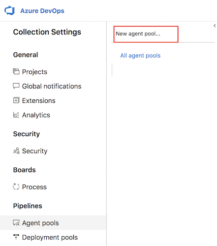
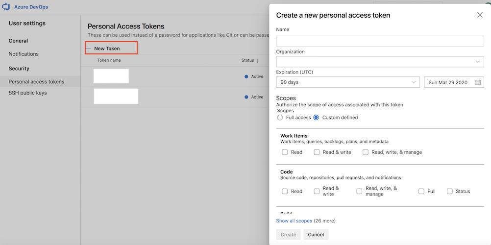

在一台虚拟机上安装，配置或删除Azure DevOps Agent是需要花费一些步骤和精力的，具体可以参考文档https://docs.microsoft.com/en-us/vsts/build-release/actions/agents/v2-linux?view=vsts。好消息是Azure DevOps已经支持容器化的方式运行Agent。本文将详细介绍如何创建和启动一个容器化的Agent。
获取Azure DevOps Agent的Docker镜像
直接从Docker Hub上下载
在我的Docker Hub空间已经有开箱即用的Docker镜像了。 打开页面https://hub.docker.com/r/mikejianzhang/azure-agent查看详细的下载说明。
自己构建
缺省的开箱即用的Docker镜像并没有包含过多的构建工具。如果这不满足你的需求，可以fork代码仓库https://github.com/mikejianzhang/azure-agent到自己的空间，修改Dockerfile添加更多的工具，再通过以下命令构建新的Docker镜像：
1 | ./build.sh azure-agent:<tag> |
如果你在公司内部构建镜像，并且需要通过代理才能访问互联网，在构建之前你需要设置http代理。构建脚本“build.sh”支持“http_proxy”, “https_proxy” and “no_proxy”。
运行Azure DevOps Agent的Docker镜像
准备工作
在Azure DevOps上创建Agent Pool
生成Personal Access Token

运行Docker镜像
1 | $ docker run -it -d --name some-agent \ |
环境变量说明：
| 变量名 | 必需 | 说明 |
|---|---|---|
| AZP_URL | 是 | 你的 Azure DevOps server url. i.e. https:// |
| AZP_TOKEN | 是 | 前面申请的有足够权限的Personal Access Token |
| AZP_AGENT_NAME | 是 | 显示在Agent Pool中的Agent名字 |
| AZP_POOL | 是 | Agent pool的名字 |
| AZP_AGENTPACKAGE_URL | 否 | 显式指定Azure Agent包的下载地址 |
变量“AZP_AGENTPACKAGE_URL”的额外说明：
从容器的启动脚本“start.sh”中可以看出，容器在启动时会去某个网址上下载Azure Agent包。如果发现下载比较慢或者根本没法下载导致容器启动慢或者失败，可以提前这个包下载下来并放在内部的某个http服务器上，然后通过变量“AZP_AGENTPACKAGE_URL”把这个http链接地址传进去。
通过执行“start.sh”中的shell命令可以获得Azure Agent包的地址：
1 | curl -LsS \ |
常见问题
利用Azure DevOps agent去执行Jenkins Job时经常会遇到下面的问题：
getaddrinfo ENOTFOUND …
解决办法是在启动容器时通过参数“–add-host”将Jenkins Server的域名和IP映射关系加到/etc/hosts中。具体如下：
1 | $ docker run -it -d --name some-agent \ |